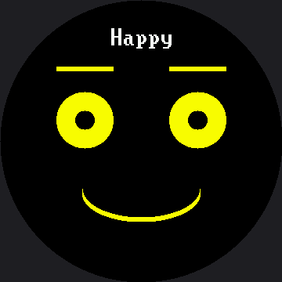

The Emotion Table¶
Go back and look hard at the expression menu. It has seven functions —
draw_happy, draw_sad, draw_angry, and four more — and every single one has the same three
lines in the same order: set the eyes, set the eyebrows, set the mouth.
Only the numbers change.
Once you see that, you cannot unsee it, and the moment has a name.
Spot the repeat
 Seven functions that differ only in their numbers are not really seven functions. Let's find out what they actually are.
Seven functions that differ only in their numbers are not really seven functions. Let's find out what they actually are.
Pattern Recognition¶
Pattern recognition means noticing that several things share a structure, so you can handle them all with one piece of code instead of one piece each. It is the thinking skill that turns a long program into a short one.
If seven functions differ only in their numbers, then the numbers are the real content and the function around them is just packaging. So put the numbers in a table, write the packaging once, and let one function draw all seven.
Data and Code Are Different Things
 Ten numbers describing a feeling are data. The instructions for turning numbers into pixels are code. Keeping them in separate places is one of the oldest good ideas in programming.
Ten numbers describing a feeling are data. The instructions for turning numbers into pixels are code. Keeping them in separate places is one of the oldest good ideas in programming.
Seven Emotions, Eight Lines¶
Each emotion becomes one row. Read the columns straight across, and the whole emotional range of the robot fits on one screen:
# name eye_rx eye_ry brow_L brow_R lift mouth style size_x size_y color
EMOTIONS = (
("Happy", 36, 36, 0, 0, 8, face.SMILE, 75, 36, config.YELLOW),
("Sad", 33, 33, -10, -10, 0, face.FROWN, 60, 30, SOFT_BLUE),
("Angry", 36, 18, 18, 18, -7, face.FLAT, 39, 0, SOFT_RED),
("Afraid", 47, 47, -18, -18, 11, face.OPEN, 23, 33, VIOLET),
("Surprised", 48, 48, 0, 0, 21, face.OPEN, 30, 39, config.CYAN),
("Disgusted", 33, 23, 15, -7, -4, face.SNEER, 45, 27, LIME),
("Contempt", 36, 36, 0, 0, 0, face.SMIRK, 51, 0, WHITE),
# ("Bored", 36, 15, 0, 0, -10, face.FLAT, 42, 0, config.GREEN),
)
Before you can read that table you need to know what each column controls. Every one of these is a knob you already turned by hand in an earlier lab:
| Column | What it controls | What changing it does |
|---|---|---|
eye_rx, eye_ry |
The eye's width and height | A tall eye reads alert; a squashed one reads angry or bored |
brow_L, brow_R |
Each eyebrow's tilt | Positive angles the inner end down into an angry V |
lift |
How high both brows sit | A big lift is the fastest way to say "surprised" |
mouth style |
Which shape the mouth takes | SMILE, FROWN, FLAT, OPEN, SMIRK, or SNEER |
size_x, size_y |
The mouth's width and curve depth | A wide shallow curve reads friendlier than a deep one |
color |
What the whole face draws in | A new axis of expression, for the cost of one column |
One More Column¶
That color column is the whole point of this section. Adding it required no new drawing code, no
new function, and no change to draw_emotion() beyond unpacking one more name.
That is what "the numbers are the real content" buys you: a brand-new axis of expression costs one column.
WHITE = config.WHITE
SOFT_BLUE = config.color565(120, 170, 255)
SOFT_RED = config.color565(255, 110, 110)
VIOLET = config.color565(200, 160, 255)
LIME = config.color565(150, 230, 120)
config.color565(red, green, blue) takes three ordinary 0–255 values and packs them into the
16-bit number the display wants. The color bits lab takes that function
apart and shows you exactly what it does to them.
Notice what did, and did not, change when this kit's labs grew from the 1.2" kit's 240×240 panel to this one's 360×360: every eye radius and mouth size above is 1.5 times the 1.2" kit's, but not one color changed. A coordinate is a fact about how many pixels you have; a color is not.
Notice too that Contempt is deliberately left white. "No color" is a design choice too, and a table that lets you say so is a better table.
One Function Draws All of Them¶
Here is the entire drawing half of the program. There is no draw_happy, no draw_angry, and no
if statement asking which emotion this is.
def draw_emotion(row):
"""Draw ANY row from the table above. This is the only drawing code in
the lab -- the seven expressions are data, not seven functions."""
(name, eye_rx, eye_ry, brow_l, brow_r, lift,
style, size_x, size_y, color) = row
face.clear()
face.set_color(color)
face.eyes(eye_rx, eye_ry)
face.eyebrows(brow_l, brow_r, lift)
face.mouth(style, size_x, size_y)
face.label(name, color=WHITE) # the caption stays white, always
print("drawing", name, row[1:])
That first statement does the work. Tuple unpacking takes the ten values in the row and hands each one its own name, in order, in a single statement. From there the function neither knows nor cares which emotion it is drawing.
That face.label() call is worth a second look, too. On this kit it draws in a wide 16×32 font
instead of the smaller font the 1.2" kit's labels use — the bigger screen would otherwise make text
read proportionally smaller, not larger — but it is still the same one call regardless of which
kit's face.py you imported.
Here's the first row of the table, drawn:

The menu shows one row at a time, so this picture is Happy — the first row. Press button A to walk the rest of the table.
The Columns Must Line Up
 Unpacking matches by position, not by name. Put the mouth style where the lift belongs and MicroPython will happily try to draw an eyebrow lifted by the word "smile" — so count your columns when you add a row.
Unpacking matches by position, not by name. Put the mouth style where the lift belongs and MicroPython will happily try to draw an eyebrow lifted by the word "smile" — so count your columns when you add a row.
The One Rule About Color¶
Color may reinforce an expression. It must never be the only thing carrying it.
That is not fussiness, and there are two concrete reasons for it. Roughly one boy in twelve has a red-green color deficiency, so an angry-red/happy-green scheme says nothing at all to somebody in most classrooms. And color survives photographs, video calls, and bright windows far worse than shape does.
There is also a perceptual trap worth knowing before you pick colors. Your eye takes most of its sense of brightness from green light and almost none from blue:
| Color | Perceived brightness (white = 255) |
|---|---|
Pure green 0x07E0 |
180 |
Pure red 0xF800 |
53 |
Pure blue 0x001F |
18 |
That is why every color in the table above is a pale mix with plenty of green in it, rather than a pure channel. A "blue" face is a dark face.
The Real Payoff¶
Adding an eighth emotion to the old program meant writing a new function, adding it to the menu tuple, and hoping you matched the style of the other seven. Adding one here costs a single line.
| Task | Seven functions | One table |
|---|---|---|
| Add an emotion | Write a function, register it | Add one row |
| Reorder the menu | Reorder a tuple of function names | Reorder rows |
| Make every mouth wider | Edit seven functions | Edit one column |
| Add color to every emotion | Edit seven functions | Add one column |
| Store the set on disk or send it over a network | Not possible — code is not data | Straightforward — rows are just numbers |
That last row is worth a second look. Because your emotions are now plain numbers, a robot could download a new personality the way it downloads a file.
Seven feelings, one function
 You just replaced fifty lines of near-identical code with eight rows of numbers, and gained the ability to add a feeling in one line. Let's draw some feelings!
You just replaced fifty lines of near-identical code with eight rows of numbers, and gained the ability to add a feeling in one line. Let's draw some feelings!
Things to Try¶
- Uncomment the "Bored" row. You just added an emotion without writing one line of drawing code. Now invent a row of your own.
- Make Sad sadder by editing only its numbers — try
eye_ry26 and a brow tilt of −18. - Give one emotion a lopsided brow. Set
brow_Lto 18 andbrow_Rto −10 on Contempt and see how much a single mismatched eyebrow changes the meaning. - Sort the table so the emotions run from most positive to most negative. Because they are data, sorting the menu is just reordering lines.
- Predict the widest eye this screen can hold, then measure it. An eye centered
face.EYE_SPACING(72 px) off the axis andface.EYE_Y(153 px) down sits about 77 px from the center of the glass, so it should run out of room aroundface.SAFE_RADIUS(168) − 77 ≈ 91. Push one emotion'seye_rxup and see how close your guess lands —SAFE_RADIUSis itself an estimate on this kit. - Set every color to
WHITEand step through again. Can you still tell the seven apart? You should be able to — the shapes were doing that work before the colors existed. - Try
config.BLUEon one emotion, thenSOFT_BLUE, and look at both from across the room. - Add a color column to the state machine's
POSEStable so the robot's mood changes hue as its state changes. One column, again, and no new drawing code.
References¶
- The Face Module — the
face.mouth()style names that let a row of data pick a shape - The Expression Menu — the seven hand-written functions this lab replaces
- Color and Bits — what
config.color565()actually does to your three numbers - The Emotion Table on the 1.2" kit — the same seven rows at 240×240, worth comparing to see exactly which numbers scaled and which didn't